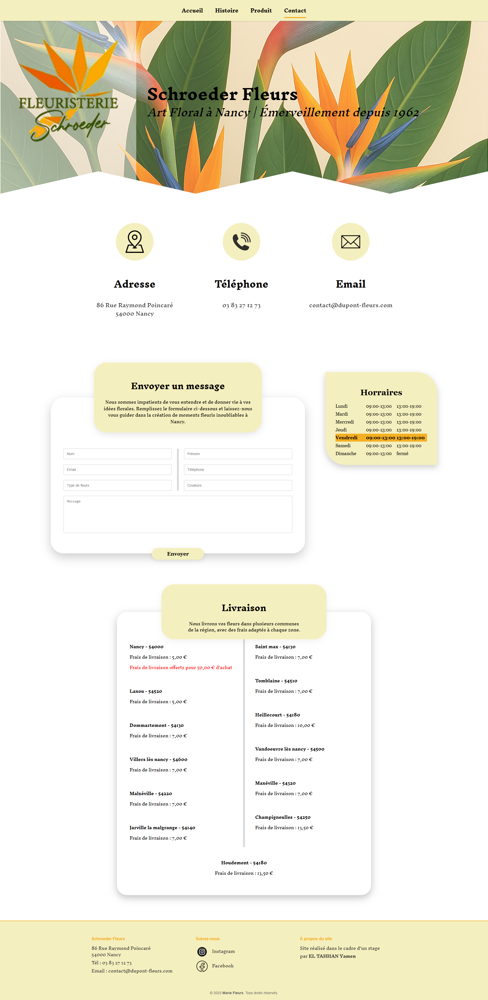

Site vitrine pour Schroeder Fleurs
Ce projet a été réalisé dans le cadre de mon stage. L’objectif était de concevoir un site web clair, chaleureux et visuel pour présenter l’univers de la boutique, ses créations florales, son histoire, ses produits et ses informations de contact.

Contexte et objectif
La page d’accueil est la porte d’entrée du site. Elle présente l’univers de la boutique : les bouquets, les créations personnalisées, les plantes et les offres spéciales pour les occasions importantes. Elle donne un premier aperçu chaleureux et visuel de ce que la boutique peut offrir, tout en invitant le visiteur à explorer le reste du site.
Créer une première impression forte, complète et rassurante.
Allier esthétique florale, clarté de navigation et information utile.
Un site vitrine cohérent, visuel et adapté à une boutique locale.

Page Histoire
La page Histoire raconte l’héritage familial de la boutique et met en avant son identité. Elle crée un lien humain avec les visiteurs grâce à des photos de l’intérieur du magasin, une présentation historique et des blocs visuels doux.
Page Produits
La page Produits fonctionne comme une galerie de créations florales. Les bouquets et compositions sont présentés sous forme de cartes visuelles, avec une logique de consultation simple pour aider l’utilisateur à s’inspirer ou à trouver le bouquet adapté à une occasion.

Page Contact
La page Contact regroupe les informations pratiques : horaires d’ouverture, tarifs de livraison, adresse, téléphone, email et formulaire de contact. Sa structure est claire, aérée et pensée pour permettre aux clients de poser une question ou de faire une demande de commande personnalisée.
Adresse, téléphone et email accessibles rapidement.
Champs organisés pour faciliter les demandes client.
Présentation claire des zones et tarifs de livraison.
Aperçus visuels du projet
Ces captures montrent la structure générale du site : accueil, histoire, produits et contact. Elles illustrent le travail réalisé sur la hiérarchie visuelle, les cartes, les couleurs douces, les images florales et la cohérence graphique globale.

Ce que ce projet m’a apporté
Comprendre un besoin client réel
J’ai appris à traduire les attentes d’une boutique en structure de site claire et utilisable.
Structurer une expérience utilisateur
J’ai travaillé la navigation, les sections, les cartes, les blocs d’information et les appels à l’action.
Relier design et développement
J’ai conçu l’interface puis développé les pages en HTML, CSS et JavaScript.